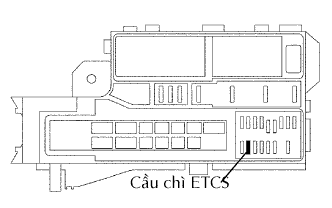
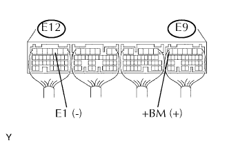
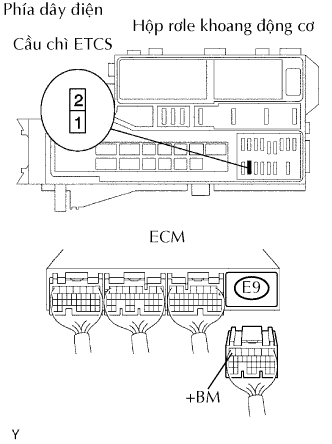

DTC P2118/89 Dòng Điện Môtơ Điều Khiển Bộ Chấp Hành Bướm Ga - Tính Năng / Phạm Vi |
| Số mã DTC | Điều kiện phát hiện DTC | Khu vực nghi ngờ |
| P2118/89 | Hở mạch trong mạch nguồn ETCS |
|
| 1.KIỂM TRA CẦU CHÌ (ETCS) |
|  |
Tháo cầu chì ETCS ra khỏi hộp rơle và cầu chì khoang động cơ.
Đo điện trở giữa của cầu chì.
|
| ||||
| OK | |
| 2.KIỂM TRA ECM (ĐIỆN ÁP +B) |
|  |
Đo điện áp của các giắc nối ECM.
| Nối dụng cụ đo | Điều kiện tiêu chuẩn |
| E9-7 (+BM) - E12-3 (E1) | 9 đến 14 V |
|
| ||||
| NG | |
| 3.KIỂM TRA DÂY ĐIỆN (CẦU CHÌ ETCS - ECM VÀ ẮC QUY) |
|  |
Tháo cầu chì ETCS ra khỏi hộp rơle và cầu chì khoang động cơ.
Ngắt giắc nối E9 của ECM.
Tháo cáp ra khỏi cực dương ắc quy.
Đo điện trở của các giắc nối phía dây điện.
| Nối dụng cụ đo | Điều kiện tiêu chuẩn |
| Cực 2 của cầu chì ETCS của R/B - E9-7 (+BM) | Dưới 1 Ω |
| Cực 2 của cầu chì ETCS của R/B hãy E9-7 (+BM) - Mát thân xe | 10 kΩ trở lên |
| Cáp dương của ắc quy - cực 1 của cầu chì ETCS của R/B | Dưới 1 Ω |
| Cáp dương của ắc quy hoặc cực 1 của cầu chì ETCS của R/B - Mát thân xe | 10 kΩ trở lên |
|
| ||||
| OK | ||
| ||